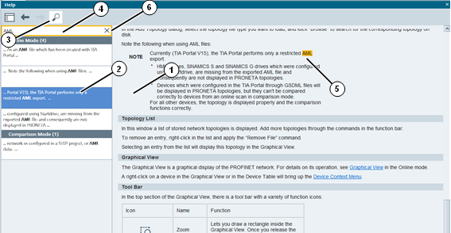

The PRONETA Basic Online Help is toggled by selecting the "Help" entry from the "Help?" drop-down menu on the right end of the header bar, or by pressing "F1" at any time. A Help View is opened on the right side of the PRONETA Basic window, where you can browse through the help topics by scrolling, following the links, or selecting entries from the table of contents. The view size can be changed by dragging the pane border to the left or the right.
The help provides the same information as this manual.
Function Bar
The Help View header consists of a function bar with four functions:
|
Icon |
Name |
Function |
|
Show Table of Contents |
Toggles a view of the table of contents. |
|
|
|
Show Previous Topic |
Goes to the previous topic in the browsing history. |
|
|
Show Next Topic |
Goes to the next topic in the browsing history. |
|
Search in Help |
Toggles a Search View inside the Help View. |
Help View Contents
The Help View consists of one or two elements arranged left to right. Beside the main help topic (1), to the left there is an optional a second pane (2) which will display either the table of contents or the search view.

Search
Clicking on the "Search in Help" icon (3) in the header bar will turn the search view on and off.
Upon entering a search term in the search field (4), PRONETA Basic will perform a full text search across the complete help contents, displaying a results list below the search field. Click on one of the result entries to jump to the corresponding topic, where the search term found will be highlighted. (5)
Search is case-insensitive and does not allow for wildcards or regular expressions. A search for "opolo" will find both "topology" and "TOPOLOGIES"
Clicking on the "×" symbol at the right end of the search field (6) clears the search term and all search results.
Table of Contents
Clicking on any topic in the table of contents will jump to the corresponding help topic.
Help Topics
A view of the currently selected help topic. Use the scroll bar on the right side to navigate up and down in the help topic.
To close the Help View, do one of the following:
Click on the "×" symbol in the top right corner of the view's title bar.
Hit "F1".
Select "Help" from the "Help?" menu in the top right corner of the PRONETA Basic window.